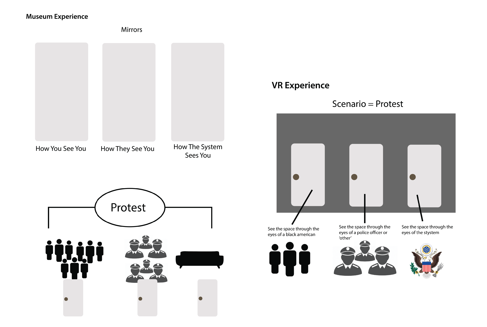
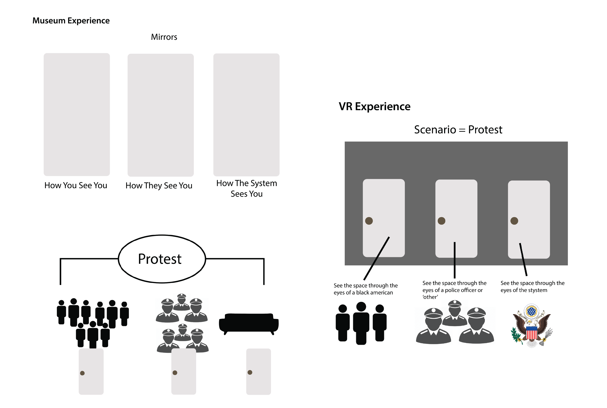
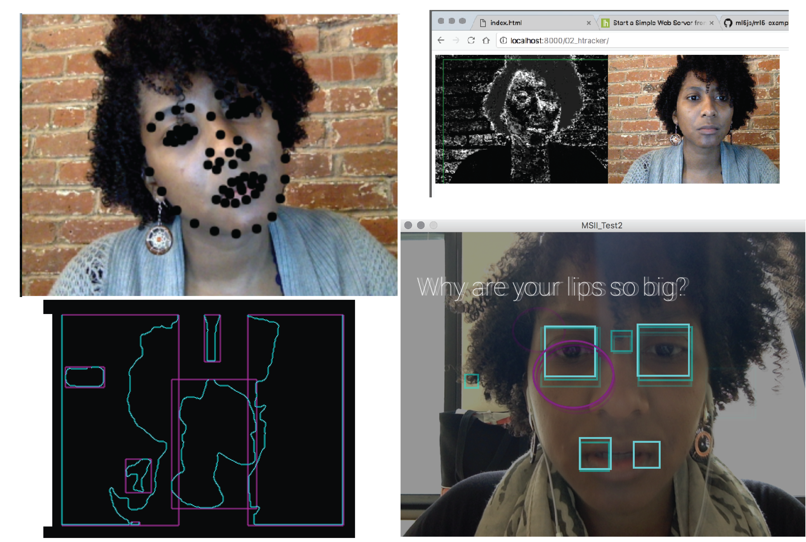

Double Consciousness
Is an interactive experience that reveals the ways in which the American system judges skin color... and questions it.
Role: Interactive Installation, User Experience Design, Programing,
Tools Used: Adobe Illustrator, Processing, Mirrors, Monitor
Context
There is a three part progression which leads to the mental and physical instability of the black mind and body.
The first: Surface Judgments. This form of judgement is the root of the oppression of black bodies. What is most noticeable on the surface is color.
The second: Double Consciousness. Double consciousness is the idea that as a black American, we can not live our lives expecting others to see the way we see ourselves. We have to consider how the “other” sees and perceives us in order to survive within the American way of life.
The third: Body Dysmorphia. Body dysmorphia is a mindset where an individual mainly sees flaws within their physical appearance. As black Americans, body dysmorphia is a mindset we are born with and sadly its manifestation within our brains can be enhanced by the “other’s” perception of black bodies. This three part progression leads to one common conclusion, that black minds and bodies are not safe in America.
Research
Throughout the creation of this installation, I researched the history behind the oppression placed on black bodies in America.
So, I read texts such as 'The Souls of Black Folk' - W.E.B Dubois | 'Killing the Black Body' - Dorothy E. Roberts | 'See Yourself Sensing: Redifining Human Perception' - Madeline Schwartzman
Ideation
This was an emotional process.
I started with wanting to creating a VR experience that shows the different angles of a protest, in order to show how a black individual living in America needs to understand how other might perceive them. Having it be a VR experience would make people feel the anxiety, fear, confusion, and assumption made on both sides of a protest.
With feedback that, idea crashed and burned. Then finding solace in my Fine Arts and Art History background, I thought to turn this into an installation.
With the installation idea, I new I wanted to implement mirrors because mirrors are an object that show you who you are without judgement.
 

I then went on to prototype the technology side of the experience. Knowing that I wanted a surveillance piece to this installation I started working with: ml5, javascript, Openframeworks, Unity.
User Testing
Step one: you first aproach the mirrors on the wall and look at yourself.
Step two: you then go behind the monitor and place your hands in front of the camera. The screen in front of you asks the question, "Living in America is my life in danger?"
Step thee: Once the surveillance system collects and determines the result of your skin color, the screen will then navigate you to a web page that proves why you are either, 'Unsafe' | 'Good to Stay' | 'Nah Your Safe' | through data.